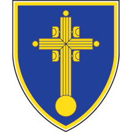

Gradska opština Vračar
Gradska opština

Opis grba
Opština ima grb i zastavu.
Grb opštine je plavi zlatom obrubljeni štit, na kome je zlatni krst Svetog Save sa kupole njegovog hrama na Vračaru. Grb opštine ima i svečanije verzije grba: srednji grb, koji je istovetan sa osnovnim, ali je štit krunisan zlatnom bedemskom krunom sa tri zupca.
Veliki grb je istovetan sa srednjim grbom, ali sadrži i držače – dva anđela prirodnog inkarnata, belih krila i zlatnih oreola, desni svetle, a levi tamne kose uvezane lepršajućim trakama, plavim kod desnog, crvenim kod levog držača. Slobodnom rukom svaki anđeo drži zlatno episkopsko žezlo. Anđeli su odeveni u duge haljine zlatnih ovratnika i rubova, desni u crvenoj, levi u plavoj i ogrnuti ogrtačima, desni plavim postavljenim u boji ciklame, levi crvenim postavljenim svetlozeleno. Oba anđela su obuvena crveno. Između anđela i štita u tlo su pobodena crna koplja okovana zlatno i istih takvih vrhova, sa kojih se u polje viju stegovi Beograda – desno i Vračara – levo; stegovi su kvadratni i opšiveni zlatnim resama. Postament velikog grba je zlatnom travom obrasli Vračarski breg, na kome je, ispod štita, otisnut crveni, belo akcentirani pečat Svetog Save. U dnu grba, na beloj traci, ispisano je crnim slovima VRAČAR. Zastava (steg) opštine je kvadratnog oblika, sa tri slobodne strane obrubljena zlatno i na plavom polju nosi krst Svetog Save u zlatu.
Opšte informacije
Grb Gradske opštine Vračar usvojen je 1993. godine. Izradilo ga je srpsko heraldičko društvo „Beli orao”, a autor likovnog rešenja je Dragomir Acović.